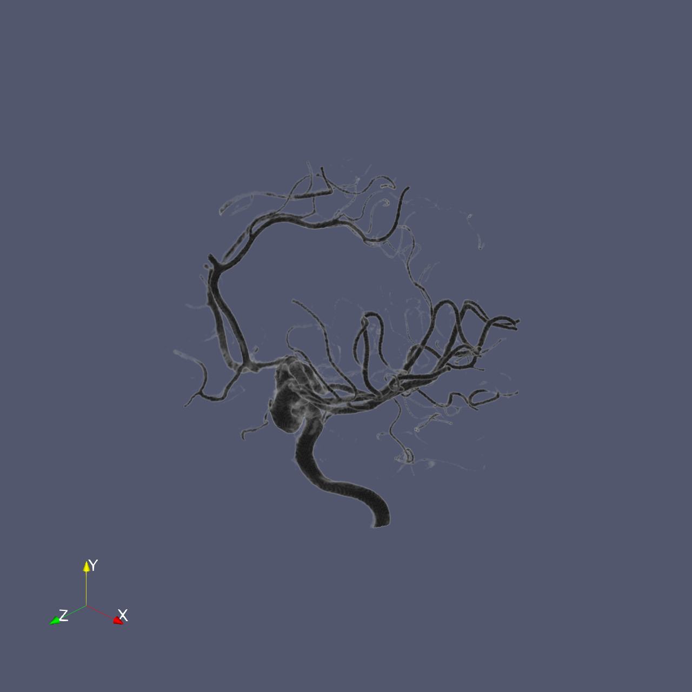

🎯 SciVisAgentBench Evaluation Report
📊 Overall Performance
Overall Score
46.4%
434/935 Points
Test Cases
25/27
Completed Successfully
Avg Vision Score
54.1%
Visualization Quality
146/270
PSNR (Scaled)
N/A
Peak SNR (0/25 valid)
SSIM (Scaled)
N/A
Structural Similarity
LPIPS (Scaled)
N/A
Perceptual Distance
Completion Rate
92.6%
Tasks Completed
ℹ️ About Scaled Metrics
Scaled metrics account for completion rate to enable fair comparison across different evaluation modes. Formula: PSNRscaled = (completed_cases / total_cases) × avg(PSNR), SSIMscaled = (completed_cases / total_cases) × avg(SSIM), LPIPSscaled = 1.0 - (completed_cases / total_cases) × (1.0 - avg(LPIPS)). Cases with infinite PSNR (perfect match) are excluded from the PSNR calculation.
🔧 Configuration
📝 dataset_001
27/35 (77.1%)
📋 Task Description
Clear the ParaView pipeline and load the data file "dataset_001/data/data_001_256x256x256_uint8.raw".
Use visualization tools to determine what object or structure is contained in this dataset. Save the 1280*1280 visualization image as "dataset_001/results/{agent_mode}/dataset_001.png"
Provide a textual report identifying what you observe and save it to "dataset_001/results/{agent_mode}/answers.txt"
🖼️ Visualization Comparison
Ground Truth

Agent Result

Image not available📏 Vision Evaluation Rubrics
📝 Text-Based Q&A Evaluation
📊 Detailed Metrics
Visualization Quality
8/10
Output Generation
5/5
Efficiency
7/10
Text Q&A Score
7/10
70.0%
Input Tokens
271,006
Output Tokens
4,209
Total Tokens
275,215
Total Cost
$0.8762